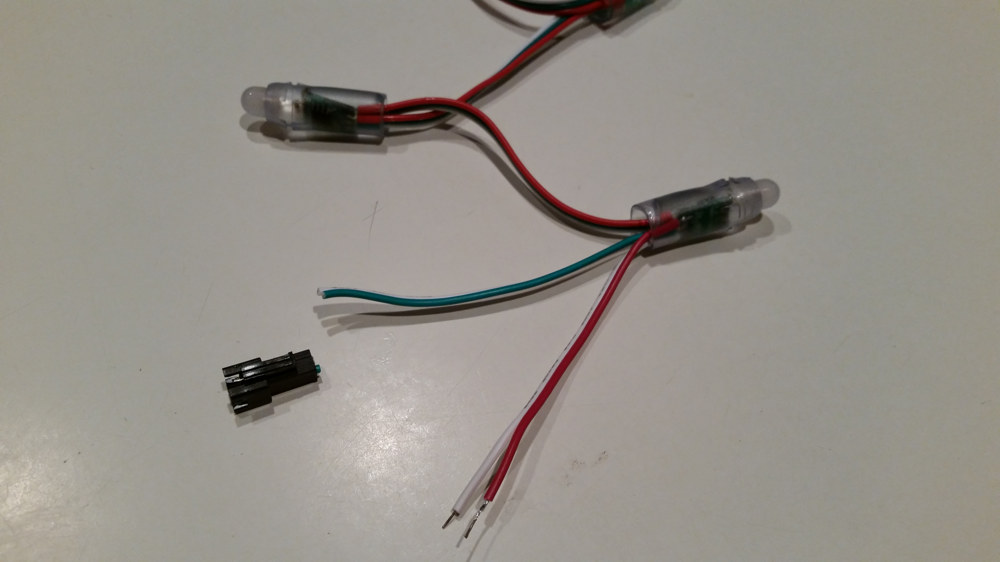
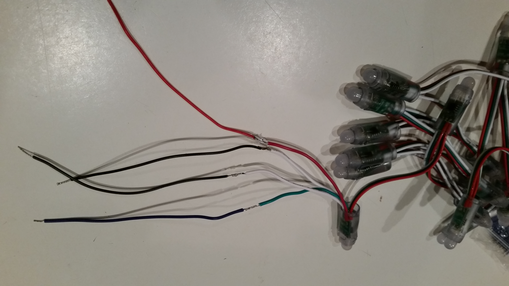
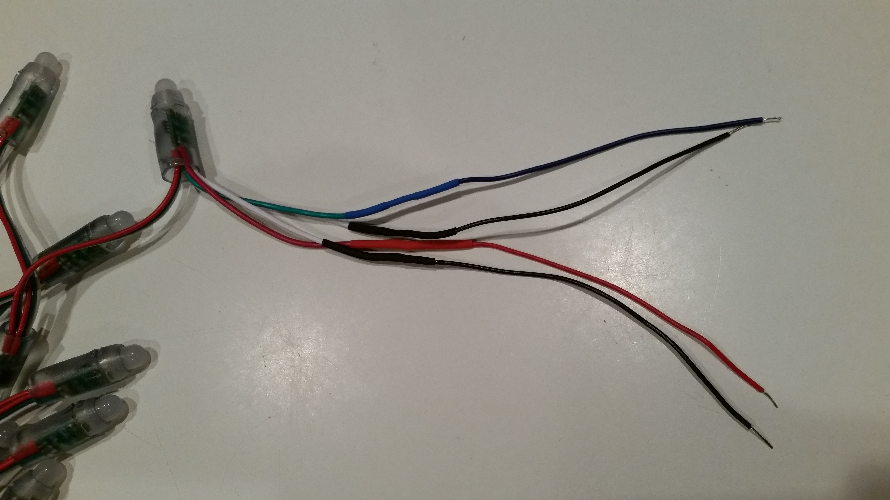

UTCS Lean In: Project Illuminate
Creating Your Own Lights Set at Home
Here is a brief guide to get you started with your own lights and Arduino board. As you go through this guide, please let me know if anything is unclear or if you have any questions.
Shopping List
- An Arduino Uno. The website has many stores listed, and you can also get it at many RadioShacks. You can check the stock at your local RadioShack by clicking the Find In Store link on their page.
- WS2811 Color-changing LEDs. These lights arrive in a set of 50, which we halved for our projects. If you choose to leave them as 50, purchase a longer strand, or create a strand of lights with some other number of leds, change the NUM_LEDS value in lights.h to the new length, and then you should be able to program them as before. The bulbs will be addressed from 0 to NUM_LEDS-1.
- A USB cable
- A 5V 2A power adaptor
- A 5.5mm x 2.1mm DC Power Cable Female Connector Plug
- RadioShack Jumper Wire Kit (Similar items available elsewhere.)
Tools
-
Wire stripper (can be done with a wire cutter if necessary)
You can watch this YouTube video to see how to use a wire stripper. - Screw driver
- Soldering iron and solder
- Electrical tape or heat shrink sleeves.
Hardware Assembly
Once you have gathered all your supplies, you are ready to assemble your hardware.
First, carefully stretch out your lights left to right. You'll notice that each end has a connector on it—these connectors allow you to extend the strands. You'll want to remove the male connector so that you can attach the Arduino board. Find it, and carefully snip it off using your wire cutters.
You should now have four independent wires---one green data wire, one red power wire, and two white ground wires. First, let's extend each of these wires using the jumper wires. This step is not strictly necessary, however, it simplifies connecting the wires to the Arduino board.
Choose one jumper wire from the kit for each of those two wires, and then solder them onto the ends.
Next, protect the soldered connections by either wrapping electrical tape around them or using a heat shrink sleeve.

Congratulations! Your hardware is ready to go. Directions to connect the hardware are on this page, but you should really set up the software (instructions below) first.
Arduino Environment
The last thing you need to do is set up the Arduino environment and drivers on your computer. To do this, go to the Arduino homepage, and follow the Getting Started with Arduino instructions.Also, our framework depends on the FastLED library. We've included it in our framework, but you can also find it on github or through the Arduino IDE under Tools > Manage Libraries.
Now you are ready to connect your lights!